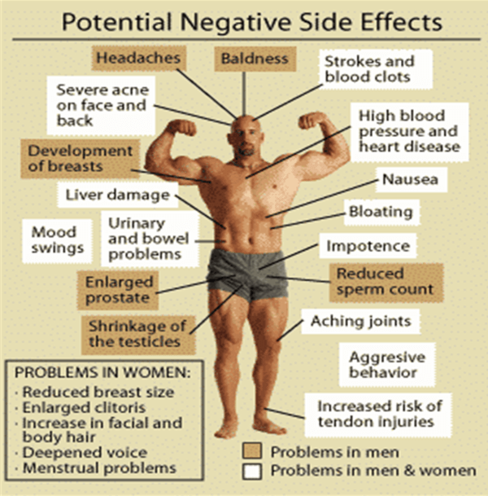

So it appears that the great transmania—“World War T“—has slightly died down from its heights around 2014, but it is still a major tenet of what we’re all supposed to believe in—observe this article complaining that heterosexual men have the nerve to not want to sleep with transgendered/non-binary people.
On a personal level, I really could not care less—if you want to shred your penis and/or put a fake penis between your legs, dress up like the opposite sex and pump hormones into yourself, that is your right, and I wish you the best. However, as a man of science, I cannot abide by the skewing and fudging of data to serve any sort of ideological purpose, which is certainly what goes on with regards to our trans friends.
Of course, we could talk about how several psychologists have attempted to publicize how different methods of treatment (ie: psychological counseling) should be sought for most people with gender dysphoria rather than arbitrarily giving them sex changes, and concurrently we can discuss how this information has been quietly swept under the rug.
Or we could also discuss how the numbers of LGBT people have skyrocketed with the millennial generation—which would seem to imply that, “Born this Way” propaganda notwithstanding, there are many factors that cause somebody to be on the LGBT spectrum which certainly include congenital factors but are not limited to them. But we’re not going to discuss these.
Instead, we can discuss how the core tenet of transgenderism is essentially undone by itself. What I mean by this is, those who advocate sex changes essentially advocate that there’s no real difference between the sexes—that gender is fluid and malleable in other words, and to think that gender is a mere binary is just idiotic troglodyte thinking. Indeed, as I have discussed in my Manthropology videos, this is a foundational pillar of modernity in and of itself.
So how does that contradict itself? Because, jokes about “identifying as (x) gender” aside, the only way one can actually transition from one gender to another is with the magic of hormone injections—liquified masculinity and femininity, to put it in the simplest terms. As most of us will recall from Biology 101, the presence of testosterone or estrogen in the body will hormonally signal for various other parts of the body to develop what are known as the secondary sexual characteristics—increased muscle mass, height, and body hair for men, and breast tissue, increased body fat in strategic areas (breasts, hips, buttocks), and lesser muscle mass for women, to name just a few.
In other words, the essence, the “juice” of manhood and womanhood, causes certain traits associated with those concepts to emerge on a person. Doesn’t that seem a bit odd? Gender is fluid and malleable, and yet there are clearly visible and definable traits associated with sex-defining hormones, and when you take those hormones and put them into the opposite sex, then you start to see some serious shit go down!
Female to male transsexuals—who are incidentally much less common than the inverse for some strange reason—notice, to their shock and horror, that in addition to the increased muscle mass and hirsuteness that comes with testosterone, they suddenly find themselves substantially hornier and, most shocking of all, have a newfound interest in mathematics, sports, and other things that are stereotypically associated with the masculine mind (but men are only interested in those things because they were socially constructed to be so in order to keep women out of math and computing, obviously.)
I don’t know why anybody would be surprised, considering that the testosterone injections FtM transsexuals obtain are dubbed “anabolic steroids” when men take them for bodybuilding purposes.
Tangentially, I also dimly recall in my middle school gym class there being a poster detailing the unpleasant side effects of steroid use; several of them were dubbed “masculinizing side effects” by the teacher when they happened to women. Perhaps that poster has been amended in the years since to say those effects aren’t so bad for women.

This exact poster as a matter of fact
So, what have we learned? That masculinizing and feminizing hormones have their names for a reason, and similarly masculinity and femininity are largely—but I will admit not ENTIRELY—a biological reality. Certainly they’re much closer to being an ironclad biological law then being the fluid and amorphous nothingness that we’re supposed to think it is.
Then again, I think our societal betters know that, as they allow hormone replacement therapy only in the ways they approve—why else would it be the case that a man cannot legally give himself testosterone to make himself more of a man, but he can take hormones that make him less of one? Again, I have no interest in taking steroids myself but it seems to me that it should be an either/or situation: either everybody can take whatever hormones they want, or nobody can.
But then again, when you realize that “goodthink science” has less to do with what’s actually scientifically accurate and more with ideology, things’ll make a little more sense.
Read More: 5 Easy Ways To Boost Your Testosterone